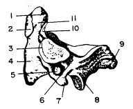

La vértebra CII se denomina axis. Caracterizándose por presentar en la parte superior del cuerpo una eminencia vertical de gran tamaño, el diente (apófisis odontoides), esta eminencia representa el cuerpo del atlas, distinguiéndose en él un ápice y dos caras articulares: las caras articulares anterior y posterior (carillas anterior y posterior), la primera se articula con la fosita dental del arco anterior del atlas, la segunda lo hace con el ligamento transverso del atlas, el cual fija el diente del axis al arco anterior del atlas, permitiendo los movimientos de rotación de la cabeza.
En las caídas desde cierta altura, como ocurre frecuentemente por los lanzamientos de cabeza en piscinas y playas, las fuerzas se transmiten desde el cráneo hacia las masas laterales del atlas, pudiendo fracturarse esta vértebra por sus partes débiles: los arcos anterior y posterior y el diente del axis.
AXIS. VISTA ANTERIOR.-1, ápice. - 2, cara articular anterior. - 3, diente. - 4, cuerpo vertebral. - 5, proceso articular inferior. - 6, proceso transverso. - 7, proceso articular superior.
